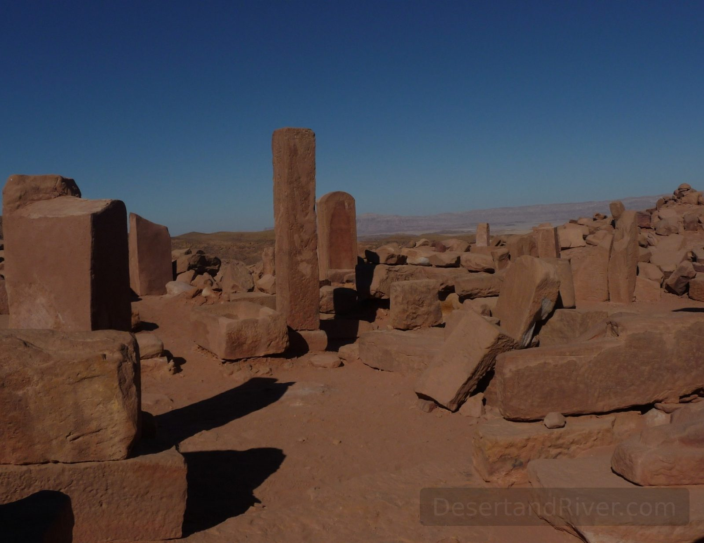

Hoog op een berg in Zuid-Sinaï staat de Tempel van Hathor, en op korte loopafstand ligt de grot waar het eerste alfabet uit de geschiedenis werd gevonden. De meeste bedrijven hebben twee of drie dagen nodig om je naar Serabit el Khadim te brengen. Wij doen het in één lange, volle dag vanuit Dahab, met de Nawamis-graven en onze eigen Kamelenrots onderweg. Joseph en Annet zijn je gidsen, en chef Mary pakt je lunch in voor de berg.

Waar ons ABC begon
Zo’n 3.800 jaar geleden krasten arbeiders in de turkooismijnen van Serabit el Khadim korte berichten in de rots. Ze gebruikten Egyptische hiërogliefen als letters voor klanken. Dit schrift, het Proto-Sinaïtisch, is de voorouder van bijna elk alfabet ter wereld, van Arabisch en Hebreeuws tot Grieks en Nederlands. Flinders Petrie vond de inscripties, en de Engelse egyptoloog Alan Gardiner ontcijferde ze. In Magharet el Teleha sta je er recht voor.

De dag
- 06:00: ophalen bij je hotel in Dahab of bij The Hub
- Ongeveer 1 uur: rijden naar de Nawamis, ronde stenen graven van ongeveer 6.000 jaar oud, ouder dan de piramides. Ongeveer 30 minuten daar
- Kamelenrots: langs de weg richting St. Catherina: een grote rots vol Nabateese, Koptische en Griekse inscripties en tekeningen van kamelen. Bijna niemand weet dat hij er staat
- Ongeveer 3 uur: rijden naar Serabit el Khadim
- Ongeveer 1 uur: met de lunch van chef Mary op zak klimmen we naar de Tempel van Hathor, godin van de liefde en “Vrouwe van het Turkoois”. Tijd voor de tempel en het uitzicht
- 30 minuten: wandelen naar Magharet el Teleha, de grot van het eerste alfabet
- Ongeveer 1,5 uur: afdalen van de berg, met een stop in Rod el-Eir: tekeningen van een giraf, hiërogliefen, Proto-Sinaïtische letters en een 3.000 jaar oude “hashtag”, ingekrast door de oude Egyptenaren
- Ongeveer 3,5 uur: terugrit. Rond 20:00 terug bij je hotel of bij The Hub


Elke letter die je nu leest, heeft een overgrootouder die in een rots bij Serabit el Khadim is gekrast.
Bekijk het vooraf
Serabit el Khadim: turkooismijnen en de Tempel van Hathor
Het eerste alfabet: Proto-Sinaïtisch schrift in Serabit el Khadim
De Nawamis-graven, ouder dan de piramides
Inbegrepen
- Ophalen en terugbrengen bij je hotel in Dahab of bij The Hub
- Privé 4x4 voor je groep
- Alle vergunningen en bedoeïenenkosten
- Lunch bereid door chef Mary
- Water
- Je gidsen Joseph & Annet
Niet inbegrepen: ontbijt, fooien en persoonlijke uitgaven.
Neem mee
- Je paspoort (controleposten op de binnenlandse wegen)
- Goede wandelschoenen
- Een lange broek
- Een hoed en zonbescherming
Is deze trip iets voor jou?
Voor deze trip heb je een goede conditie nodig: ongeveer drie uur wandelen, met een steile klim naar de tempel en een lange afdaling, plus ongeveer zeven uur in de auto. Liever een rustiger tempo? Vraag ons naar de tweedaagse versie.
Prijs
€400 per auto, 1 tot 4 personen
Boek deze trip
Stuur ons je datum en het aantal personen via WhatsApp. We bevestigen de datum en sturen je een veilige betaallink voor de aanbetaling. De rest betaal je in Dahab.
Boek via WhatsAppWat onze gasten zeggen


Annulering
Gratis annuleren tot 3 dagen voor de trip. Bij latere annulering wordt de volledige prijs in rekening gebracht.